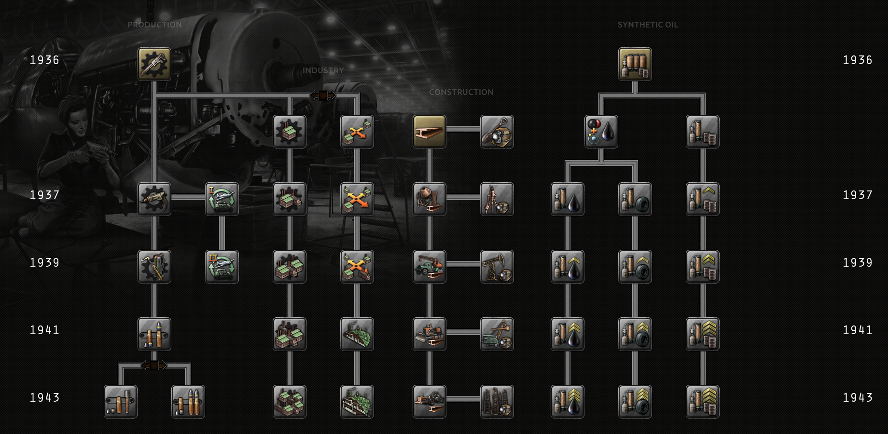

Industry科技
原页面：Industry technology
Industry科技解锁与工业产出、建造速度、维修速度、资源获取效率、燃料获取效率，以及燃料基础设施与合成炼油厂建造相关的科技。像engineering technologies一样，工业科技往往在国家层面提供通用加成，但与工程科技不同，这些加成全都严格与经济相关，无论直接还是间接。
工业科研树

生产
| 科技 | 年份 | 基础时间 | 前置条件 | 修正项 |
|---|---|---|---|---|
基础机床 多种新研制的铣床可用于军工生产，从任何机工车间都能配备的小型多用途型号，到突破技术极限的大型先进型号，不一而足。 |
1936 | 165 days | – | 此改动的结果：每天 |
改进型机床 六角车床正被证明是大规模生产不可或缺的设备。确保车床本身的高效制造与使用，将给我们带来显著的工业优势。 |
1937 | 165 days | 基础机床 | 此改动的结果：每天 |
先进机床 利用伺服机构实现机床自动化的设想此前已有讨论。把这些设想付诸实践，就能利用计算机等其他自动化领域的进步。 |
1939 | 220 days | 改进型机床 | 此改动的结果：每天 |
流水线生产 已在许多行业使用的动力流水线，能够带来前所未有的生产洪流，从而改变战争的走向。 |
1941 | 220 days | 先进机床 | 此改动的结果：每天 |
柔性生产线 流水线即使像上了油的机器一样顺畅，仍然由人来操作，因而在需要时能够灵活调整。我们应在工业生产中善用这一点。 |
1943 | 275 days | 流水线生产 Excludes 流线型生产线 |
|
流线型生产线 流水线的标准化与刚性结构是其效率与安全的关键所在。这两点应成为我们工业生产的发展重点。 |
1943 | 275 days | 流水线生产 Excludes 柔性生产线 |
|
煤粉燃烧锅炉 . |
1937 | 220 days | 改进型机床 | 每单位煤能源获取: +15% |
高效涡轮机 . |
1939 | 220 days | 煤粉燃烧锅炉 | 每单位煤能源获取: +15% |
工业
这些科技被归入两个互斥分支。
| 科技 | 年份 | 基础时间 | 前置条件 | 修正项 |
|---|---|---|---|---|
集中工业 I 把工业生产集中于少数关键地点，将使我们能够大幅提升其效率。 |
1936 | 220 days | 基础机床 Excludes 分散式工业 I |
每项拥有的科技 |
集中工业 II 进一步集中制造业将有助于压低成本。 |
1937 | 220 days | 集中工业 I | |
集中工业 III 让基础设施网络适应我们更为集中的工业，可以降低基础设施开支。 |
1939 | 220 days | 集中工业 II | |
集中工业 IV 让我国工业的关键节点彼此靠近，可以增强这些集中区域的效力。 |
1941 | 220 days | 集中工业 III | |
集中工业 V 大型工业联合体如今把我国工业的许多环节结合起来，最大限度地降低了运输与人工成本。 |
1943 | 220 days | 集中工业 IV | |
分散式工业 I 把我们的工业分散布置，可以确保在战时敌人难以将其作为打击目标。 |
1936 | 220 days | 基础机床 Excludes 集中工业 I |
|
分散式工业 II 进一步分散我们的制造业，会使敌人更难以打击其中的特定部分。 |
1937 | 220 days | 分散式工业 I | 每项拥有的科技 |
分散式工业 III 让工厂以其他经营活动的名义运转，将降低遭到直接攻击的风险。 |
1939 | 220 days | 分散式工业 II | |
分散式工业 IV 对工厂进行伪装与疏散，可以形成一张极难被彻底破坏的网络。 |
1941 | 220 days | 分散式工业 III | |
分散式工业 V 不仅让我们的工业，也让连接工业的基础设施都在保密状态下运转，我们就能使其更难以被空袭摧毁。 |
1943 | 220 days | 分散式工业 IV |
集中 vs. 分散工业
concentrated或 dispersed工业分支各有其优势与劣势，选择使用哪一个取决于玩家的游玩风格。如果游戏内情况发生变化，玩家也总是可以从一个分支切换到另一个，不过这样做会迫使他们必须从头研究该分支中的所有科技。
- 集中工业
- 共有 5 个等级可研究，时间跨度从 1936 年到 1943 年。每个新等级提供的加成与之前等级相同。通过选择 集中工业，玩家提高其军用工厂产出的幅度大于选择 分散工业所能得到的。这使玩家能把新建与既有的军用工厂都变得更有效率，但前提是它们被分配去生产相同装备一段时间。
- 分散工业
- 共有 5 个等级可研究，时间跨度从 1936 年到 1943 年。除第一个等级外，每个新等级提供相同的加成；第一个等级提供的工厂被轰炸脆弱性削减略多于其余等级。通过选择 分散工业，玩家能降低其工厂对战略轰炸的脆弱性，同时提高其所有生产线的基准生产效率以及该效率的保持率，相比选择 集中工业所得到的更多。这降低了玩家对战略轰炸的敏感度，使新建的军用工厂在生产的最初几个月里效率更高，并让玩家在应对生产需求变化时有更大余裕，包括把生产线切换为刚刚过时装备的升级型号时。
| 修正 | 集中工业 | 分散工业 |
|---|---|---|
| +75% | +50% | |
| +50% | +50% | |
| 每州最大工厂数 | +100% | +100% |
| – | +50% | |
| – | +25% | |
| 工厂被轰炸脆弱性 | – | −55% |
可以把这两种风格理解为「在任何给定生产效率下最大化潜在产出」与「缩短达到 100% 生产效率所需的时间」。总体而言，在生产同一条生产线上产出相同装备大约一年到一年半之后， concentrated选项产出更多；而在一条新生产线的最初一年到一年半里，以及一条既有生产线被切换为生产同类型装备升级型号后的最初两到三年里， dispersed选项产出更多。[1]
建造
建造科技
| 科技 | 年份 | 基础时间 | 前置条件 | 修正项 |
|---|---|---|---|---|
建造 I 改进的方法与材料使我们能更快地建造民用与军用建筑。 |
1936 | 220 days | – | 每项拥有
|
建造 II 更新我们的工具与设备，将进一步助力我们的建造工作。 |
1937 | 220 days | 建造 I | |
建造 III 采用现代车辆，并运用我们在建造方面取得的经验，可以使维修速度大大加快。 |
1939 | 220 days | 建造 II | |
建造 IV 更高程度的机械化与更完善的流程，进一步提升了建筑施工速度。 |
1941 | 220 days | 建造 III | |
建造 V 高效建造的未来，既需要为单个项目做更周密的规划，也需要在可能之处采用标准化方案。 |
1943 | 220 days | 建造 IV |
采掘科技
| 科技 | 年份 | 基础时间 | 前置条件 | 修正项 |
|---|---|---|---|---|
采掘 I 钻探技术的进步使我们能够开采以往无法触及的资源。 |
1936 | 220 days | 建造 I | 每项拥有
|
采掘 II 新技术帮助我们更高效地采集资源。开采时不再使资源受到污染，因而产量更高。 |
1937 | 220 days | 建造 II | |
采掘 III 地质学的进步有助于我们确定资源的位置。现在我们能够把开采力量集中于更有可能发现大量自然资源的地方。 |
1939 | 220 days | 建造 III | |
采掘 IV 关键流程的自动化与机械方面的进步，使我们所有的资源开采点效率大幅提高。 |
1941 | 220 days | 建造 IV | |
采掘 V 露天开采等领域的进步，使我们能从现有开采场获得更高的资源产量。 |
1943 | 220 days | 建造 V |
合成资源
| 科技 | 年份 | 基础时间 | 前置条件 | 效果 |
|---|---|---|---|---|
燃料储存 大规模储存燃料需要一整套复杂的储罐、管道与阀门，以确保既安全又便于随时取用。 |
1936 | 110 days | – |
|
燃料精炼 I 化学裂解技术的进步提高了从石油中获取轻质燃料的产率。 |
1936 | 330 days | 燃料储存 | 每项拥有
|
燃料精炼 II 更好地规划炼油厂布局可减少燃料的浪费。 |
1937 | 330 days | 燃料精炼 I | |
燃料精炼 III 改进的回收方法使我们能够从副产品中提炼燃料。 |
1939 | 330 days | 燃料精炼 II | |
燃料精炼 IV 化学工程的新发展使我们能够从新的来源中提炼燃料。 |
1941 | 330 days | 燃料精炼 III | |
燃料精炼 V 在炼油厂建造中采用新方法与改进的布局，能大幅提高处理量并减少浪费。 |
1943 | 330 days | 燃料精炼 IV | |
合成石油实验 为减少对石油的依赖，可以研究以其他物质和材料制造替代品的工艺。 |
1936 | 330 days | 燃料储存 |
|
石油加工 建立用于合成蒸馏与石油产品精炼的工厂网络，是确保我国燃料供应的下一步。 |
1937 | 165 days | 合成石油实验 | 每项拥有
|
改进型石油加工 把以往实验性的蒸馏方法转为大规模作业，将使我们能更好地适应可获得的原料与需求。 |
1939 | 165 days | 石油加工 | |
先进石油加工 加氢处理等新的实验性提纯技术可用于石油加工，从而大幅改进最终产品。 |
1941 | 165 days | 改进型石油加工 | |
现代石油加工 我们的炼油厂可以通过加氢裂化、烷基化、硫醇氧化和异构化等新的先进石油加工方法得到进一步改进。 |
1943 | 165 days | 先进石油加工 | |
| 橡胶加工 需要以工业方式加工合成橡胶，以减少我们对天然橡胶的依赖。 |
1937 | 165 days | 合成石油实验 | 每项拥有
|
改进型橡胶加工 借助加速脱氢反应的新工艺，合成橡胶的大规模生产成为可能。 |
1939 | 165 days | 橡胶加工 | |
先进橡胶加工 采用十二烷基硫醇聚合调节剂等改进工艺的通用合成橡胶配方，将使我们能够扩大合成橡胶产量。 |
1941 | 165 days | 改进型橡胶加工 | |
现代橡胶加工 转向更优化的聚合工艺将带来更低的成本与更高的产量。 |
1943 | 165 days | 先进橡胶加工 |
参考资料
- ↑ 演示请见 https://www.youtube.com/watch?v=4FOIOt4YGzY
| 政治 | 意识形态 • 阵营 • 国策 • 理念 • 政府 • 傀儡国 • 流亡政府 • 外交 • 世界紧张度 • 内战 • 占领 • 力量均势 |
| 生产 | 贸易 • 生产 • 建造 • 装备 • 燃料 • 军工组织 • 国际市场 |
| 科研与科技 | 科研 • 步兵科技 • 支援连科技 • 装甲科技（也包括 未拥有绝不后退）• 火炮科技 • 陆军学说 • 特种部队学说 • 海军科技（也包括 未拥有全民持枪）• 海军支援科技 • 海军学说 • 空军科技（也包括 未拥有以血盟誓）• 空军学说 • Engineering科技 • Industry科技 • 特殊项目 • 科学家 |
| 军事与战争 | 战争 • 和平会议 • 陆军单位 • 陆战 • 师编制设计 • 坦克设计 • 陆军编制器 • 集团军 • 指挥官 • 作战计划 • 战斗战术 • 舰船 • 舰船设计（伦敦海军条约）• 海战 • 飞机设计 • 空战 • 经验 • 军官团 • 损耗与事故 • 后勤 • 人力 • 核弹 • 突袭 |
| 间谍活动 | 情报 • 情报机构 • 特工 • 任务 • 行动 |
| 地图 | 地图 • 省份 • 地形 • 天气 • 州 |
| 事件与决议 | 事件 • 决议 |